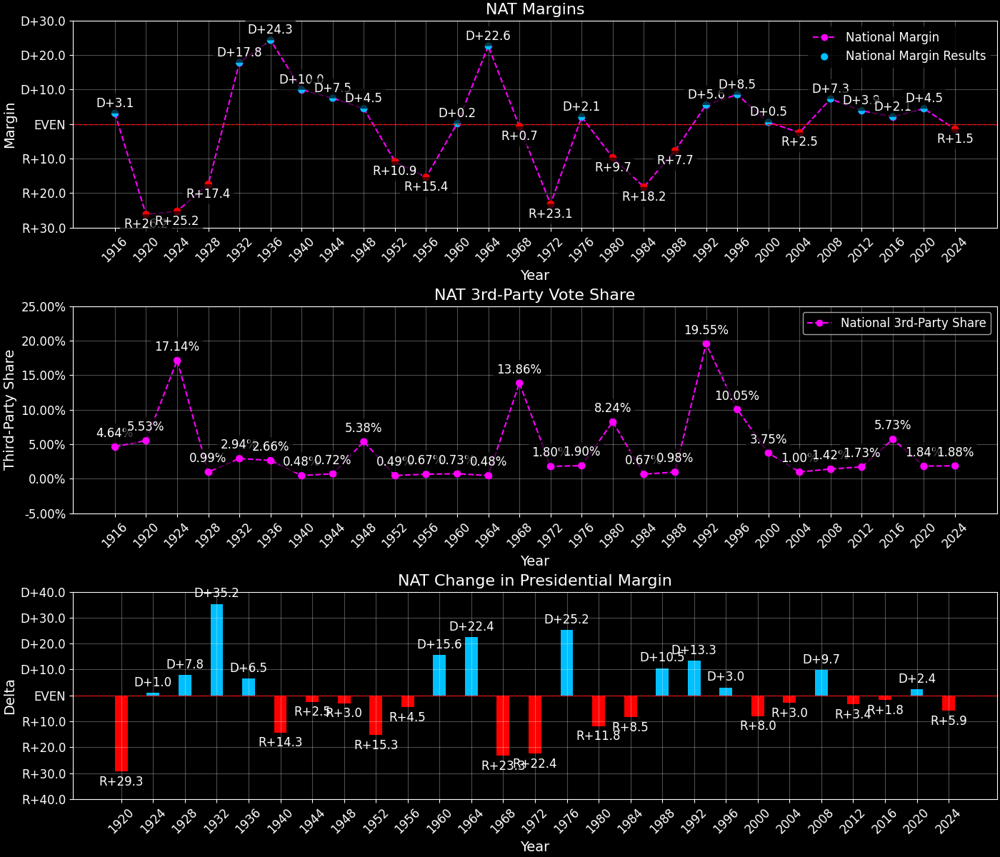

National (NAT)

National overview
National — Total Data
| Year | D | R | Nat. Margin | Total votes |
|---|---|---|---|---|
| 1964 | 43,339,772(61.4%) | 27,175,754(38.5%) | D+22.6 | 70,641,539 |
| 1968 | 31,271,839(42.7%) | 31,783,783(43.4%) | R+0.7(Δ R+23.3) | 73,199,998 |
| 1972 | 29,333,806(37.5%) | 47,425,218(60.7%) | R+23.1(Δ R+22.4) | 78,161,119 |
| 1976 | 41,064,160(50.1%) | 39,384,954(48.0%) | D+2.1(Δ D+25.2) | 82,000,183 |
| 1980 | 35,701,089(41.0%) | 44,141,752(50.7%) | R+9.7(Δ R+11.8) | 87,022,501 |
| 1984 | 37,791,867(40.5%) | 54,791,972(58.8%) | R+18.2(Δ R+8.5) | 93,204,248 |
| 1988 | 42,069,866(45.7%) | 49,193,728(53.4%) | R+7.7(Δ D+10.5) | 92,145,386 |
| 1992 | 45,390,173(42.9%) | 39,654,723(37.5%) | D+5.6(Δ D+13.3) | 105,837,915 |
| 1996 | 47,951,906(49.2%) | 39,748,600(40.7%) | D+8.5(Δ D+3.0) | 97,560,946 |
| 2000 | 51,551,628(48.3%) | 51,176,480(47.9%) | D+0.5(Δ R+8.0) | 106,753,936 |
| 2004 | 59,679,614(48.2%) | 62,883,625(50.8%) | R+2.5(Δ R+3.0) | 123,813,348 |
| 2008 | 70,253,758(52.9%) | 60,696,575(45.7%) | D+7.3(Δ D+9.7) | 132,843,427 |
| 2012 | 66,618,909(51.0%) | 61,700,720(47.2%) | D+3.9(Δ R+3.4) | 130,586,713 |
| 2016 | 66,495,601(48.1%) | 63,816,347(46.2%) | D+2.1(Δ R+1.8) | 138,261,150 |
| 2020 | 82,093,156(51.2%) | 75,141,558(46.9%) | D+4.5(Δ D+2.4) | 160,205,475 |
| 2024 | 75,824,877(48.3%) | 78,246,361(49.8%) | R+1.5(Δ R+5.9) | 157,024,512 |
Column explanations
- Δ
- Change (delta) in the value from the previous election year.
- Year
- Election year.
- D
- Number of votes for the Democratic candidate (raw count(pct%)).
- R
- Number of votes for the Republican candidate (raw count(pct%)).
- Nat. Margin
- The national presidential margin for that year, including third-party votes ((D_total - R_total)/total_votes).
- Total votes
- Total voter turnout or ballots cast (when provided).
National — Third-Party Data
| Year | D | R | Other votes | 3rd-Party Nat. Share |
|---|---|---|---|---|
| 1964 | 43,339,772(61.4%) | 27,175,754(38.5%) | 126,013(0.2%) | 0.48% |
| 1968 | 31,271,839(42.7%) | 31,783,783(43.4%) | 10,144,376(13.9%) | 13.86% |
| 1972 | 29,333,806(37.5%) | 47,425,218(60.7%) | 1,402,095(1.8%) | 1.80% |
| 1976 | 41,064,160(50.1%) | 39,384,954(48.0%) | 1,551,069(1.9%) | 1.90% |
| 1980 | 35,701,089(41.0%) | 44,141,752(50.7%) | 7,179,660(8.3%) | 8.24% |
| 1984 | 37,791,867(40.5%) | 54,791,972(58.8%) | 620,409(0.7%) | 0.67% |
| 1988 | 42,069,866(45.7%) | 49,193,728(53.4%) | 881,792(1.0%) | 0.98% |
| 1992 | 45,390,173(42.9%) | 39,654,723(37.5%) | 20,793,019(19.6%) | 19.55% |
| 1996 | 47,951,906(49.2%) | 39,748,600(40.7%) | 9,860,440(10.1%) | 10.05% |
| 2000 | 51,551,628(48.3%) | 51,176,480(47.9%) | 4,025,828(3.8%) | 3.75% |
| 2004 | 59,679,614(48.2%) | 62,883,625(50.8%) | 1,250,109(1.0%) | 1.00% |
| 2008 | 70,253,758(52.9%) | 60,696,575(45.7%) | 1,893,094(1.4%) | 1.42% |
| 2012 | 66,618,909(51.0%) | 61,700,720(47.2%) | 2,267,084(1.7%) | 1.73% |
| 2016 | 66,495,601(48.1%) | 63,816,347(46.2%) | 7,949,202(5.7%) | 5.73% |
| 2020 | 82,093,156(51.2%) | 75,141,558(46.9%) | 2,970,761(1.9%) | 1.84% |
| 2024 | 75,824,877(48.3%) | 78,246,361(49.8%) | 2,953,274(1.9%) | 1.88% |
Column explanations
- Year
- Election year.
- D
- Number of votes for the Democratic candidate (raw count(pct%)).
- R
- Number of votes for the Republican candidate (raw count(pct%)).
- Other votes
- Number of votes for third-party (other) candidates (raw count(pct%)).
- 3rd-Party Nat. Share
- The national third-party share for that year (3rd-Party votes / total votes).

Two-party national overview
National — Two-Party Data
| Year | D | R | 2-Party Nat. Margin |
|---|---|---|---|
| 1964 | 43,339,772(61.5%) | 27,175,754(38.5%) | D+22.7 |
| 1968 | 31,271,839(49.6%) | 31,783,783(50.4%) | R+0.8(Δ R+23.5) |
| 1972 | 29,333,806(38.2%) | 47,425,218(61.8%) | R+23.6(Δ R+22.8) |
| 1976 | 41,064,160(51.0%) | 39,384,954(49.0%) | D+2.1(Δ D+25.7) |
| 1980 | 35,701,089(44.7%) | 44,141,752(55.3%) | R+10.6(Δ R+12.7) |
| 1984 | 37,791,867(40.8%) | 54,791,972(59.2%) | R+18.3(Δ R+7.7) |
| 1988 | 42,069,866(46.1%) | 49,193,728(53.9%) | R+7.8(Δ D+10.5) |
| 1992 | 45,390,173(53.4%) | 39,654,723(46.6%) | D+6.9(Δ D+14.7) |
| 1996 | 47,951,906(54.7%) | 39,748,600(45.3%) | D+9.5(Δ D+2.6) |
| 2000 | 51,551,628(50.2%) | 51,176,480(49.8%) | D+0.5(Δ R+8.9) |
| 2004 | 59,679,614(48.7%) | 62,883,625(51.3%) | R+2.5(Δ R+3.0) |
| 2008 | 70,253,758(53.6%) | 60,696,575(46.4%) | D+7.4(Δ D+9.9) |
| 2012 | 66,618,909(51.9%) | 61,700,720(48.1%) | D+3.9(Δ R+3.4) |
| 2016 | 66,495,601(51.0%) | 63,816,347(49.0%) | D+2.2(Δ R+1.7) |
| 2020 | 82,093,156(52.2%) | 75,141,558(47.8%) | D+4.5(Δ D+2.3) |
| 2024 | 75,824,877(49.2%) | 78,246,361(50.8%) | R+1.5(Δ R+6.0) |
Column explanations
- Δ
- Change (delta) in the value from the previous election year.
- Year
- Election year.
- D
- Number of votes for the Democratic candidate (raw count(pct%)).
- R
- Number of votes for the Republican candidate (raw count(pct%)).
- 2-Party Nat. Margin
- The national presidential margin for that year, including third-party votes ((D_total - R_total)/total_votes).